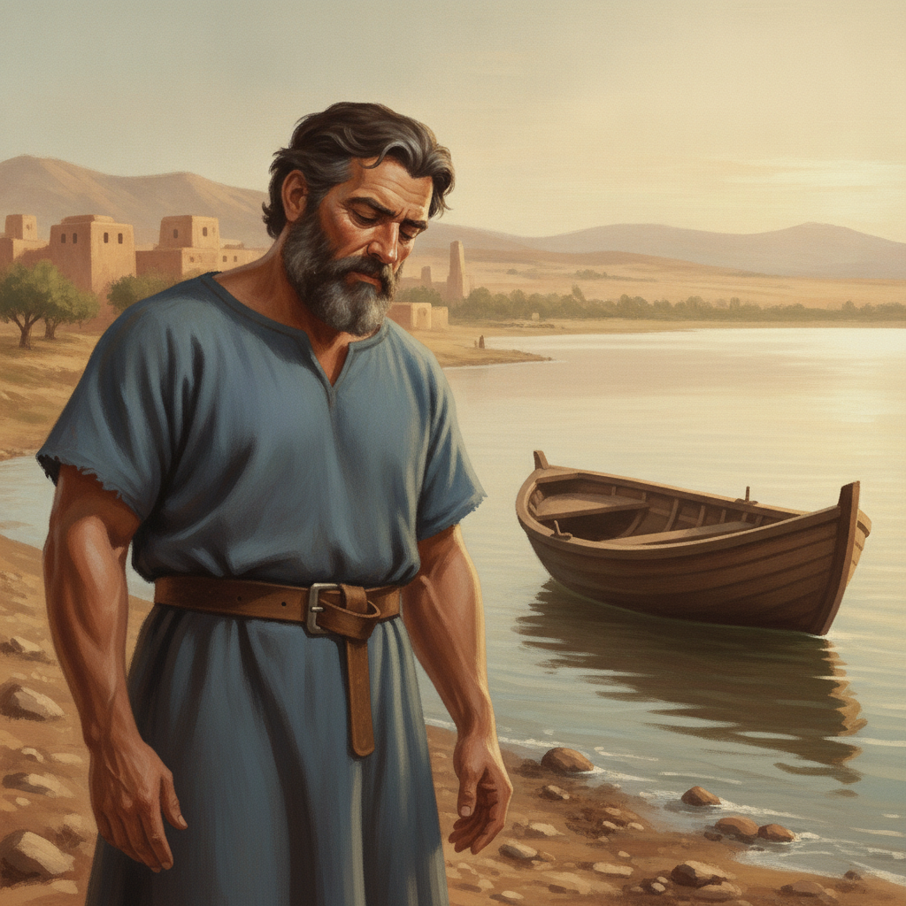
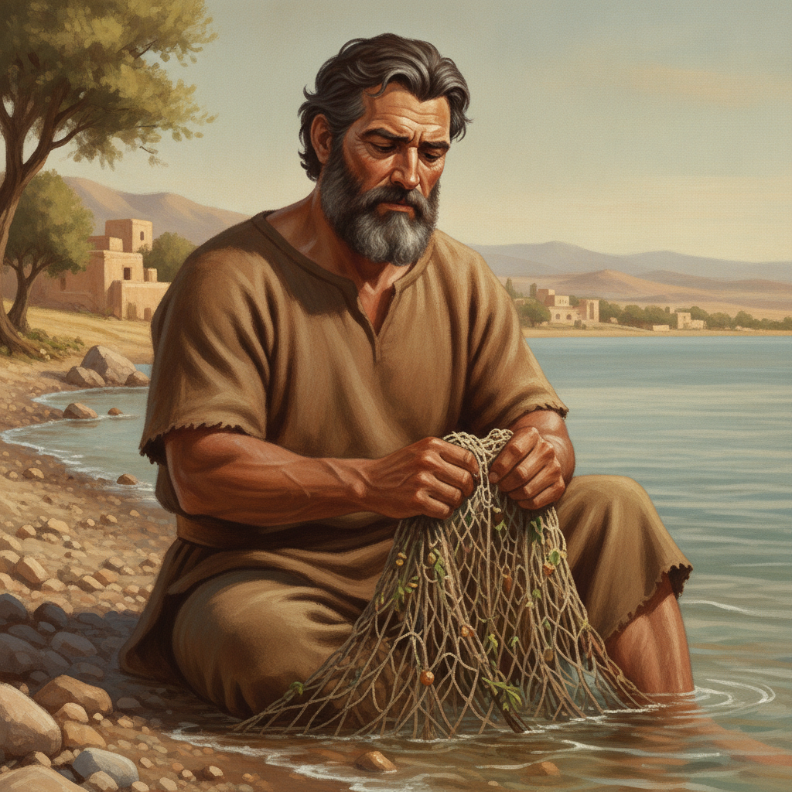
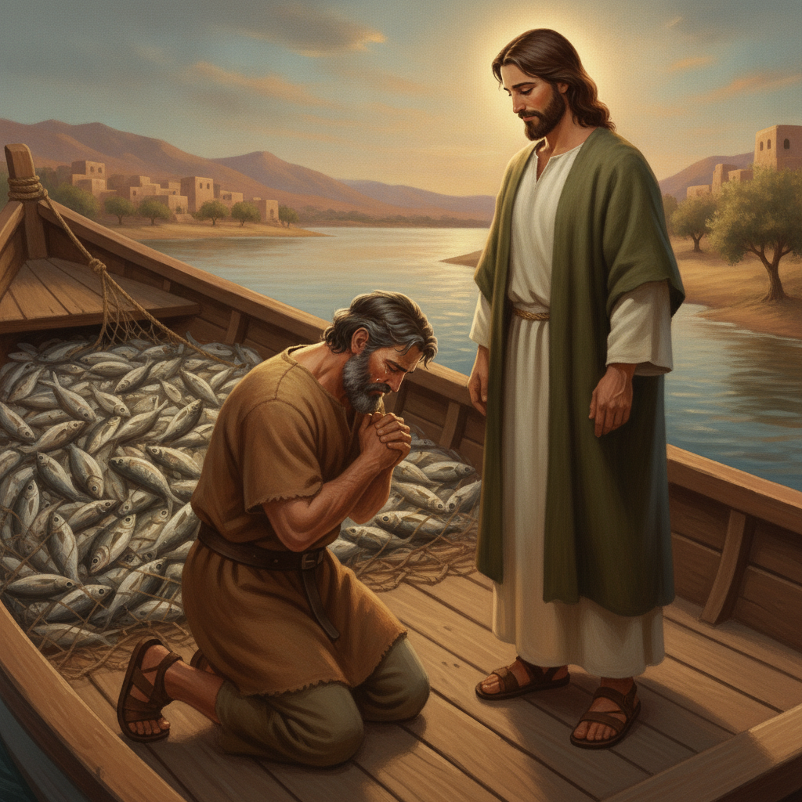
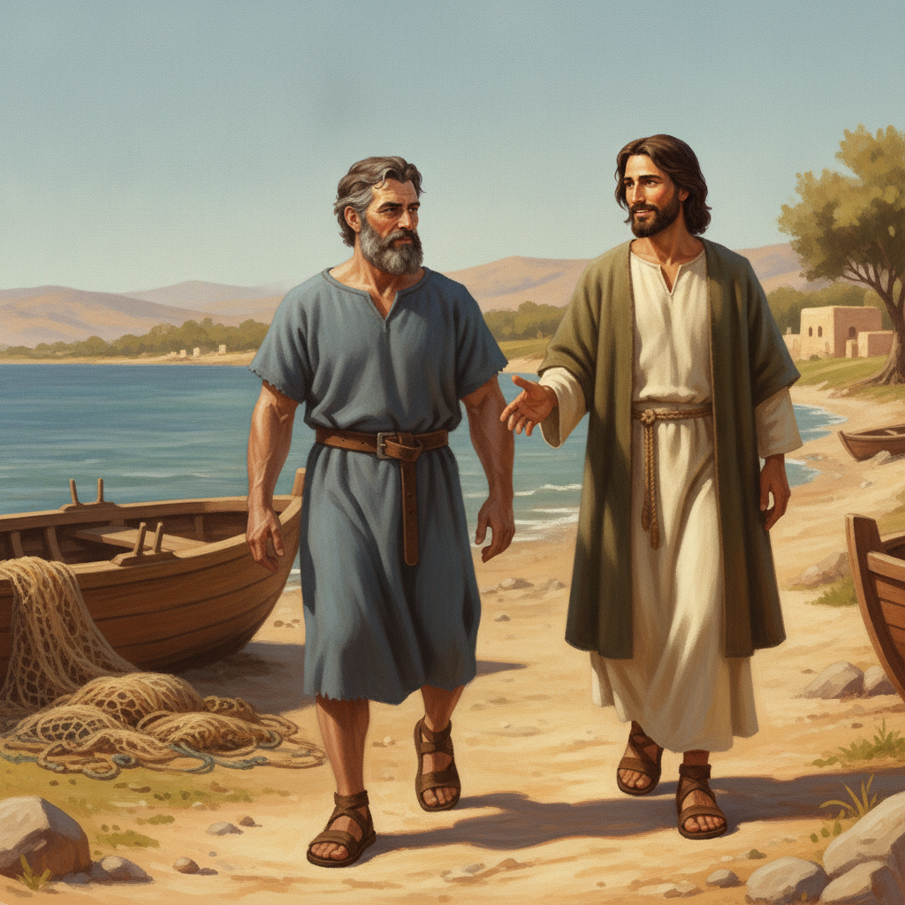

갈릴리 호수의 아침이 조용히 밝아오고 있었습니다. 푸른 호수 위로 붉은 햇살이 번졌지만 베드로의 마음은 여전히 캄캄했습니다. 베드로는 평생 이 바다를 누벼 온 베테랑 어부였습니다. 하지만 지난밤에는 거친 파도를 가르며 그물을 수십 번 던지고도 물고기를 단 한 마리도 잡지 못했습니다. 차가운 새벽바람 속에 빈 배만 덩그러니 흔들리고 있었습니다. 베드로는 쓰린 마음으로 깊은 한숨을 내쉬었습니다.
어린이를 위한 말씀 이야기

갈릴리 호수의 아침이 조용히 밝아오고 있었습니다. 푸른 호수 위로 붉은 햇살이 번졌지만 베드로의 마음은 여전히 캄캄했습니다. 베드로는 평생 이 바다를 누벼 온 베테랑 어부였습니다. 하지만 지난밤에는 거친 파도를 가르며 그물을 수십 번 던지고도 물고기를 단 한 마리도 잡지 못했습니다. 차가운 새벽바람 속에 빈 배만 덩그러니 흔들리고 있었습니다. 베드로는 쓰린 마음으로 깊은 한숨을 내쉬었습니다.

베드로는 굵은 뼈대와 다부진 체격을 가진 힘센 사람이었습니다. 평생 그물을 끌어올려 팔뚝은 단단했고, 얼굴은 거친 햇볕에 검게 그을려 있었습니다. 그는 지친 표정으로 자갈밭에 주저앉아 흙빛 겉옷을 매만지며 텅 빈 그물을 씻었습니다. 잡풀만 걸려 있는 축축한 그물을 털어내는 손길이 무거웠습니다. '오늘 밤에는 우리 가족이 무엇을 먹어야 하나' 하는 걱정이 밀려왔습니다. 실패감에 짓눌린 그의 어깨가 한없이 무겁게 처졌습니다.
바로 그때 호숫가 저편에서 웅성거리는 소리가 들려왔습니다. 수많은 사람이 누군가를 둘러싸고 몰려오고 있었습니다. 사람들의 중심에는 소박하고 이음새 없는 린넨 옷을 입으신 예수님이 계셨습니다. 예수님의 깊고 따뜻한 갈색 눈동자에는 깊은 자비가 가득했습니다. 얼굴에 화려한 장식은 없었지만 세상 누구도 흉내 낼 수 없는 평안과 거룩한 빛이 감돌았습니다. 베드로는 그물을 씻다 말고 고개를 들어 그분을 바라보았습니다.
예수님은 물가로 다가오시더니 베드로의 배에 오르셨습니다. 그리고 배를 육지에서 조금 떼어 달라고 부탁하셨습니다. 베드로는 배를 호수 안쪽으로 살짝 밀어 넣었습니다. 예수님은 배에 단정히 앉으셔서 해변에 모인 사람들에게 하나님 나라의 말씀을 가르치기 시작하셨습니다. 잔잔한 물결 위로 울려 퍼지는 그분의 음성은 맑고 힘이 있었습니다. 배 한구석에서 그물을 정리하던 베드로의 마음에 알 수 없는 평안과 따뜻한 위로가 차올랐습니다.
말씀을 모두 마치신 예수님이 고개를 돌려 베드로를 바라보셨습니다. 그리고 조용하지만 단호한 어조로 놀라운 말씀을 하셨습니다. 「깊은 곳으로 가서 그물을 내려 고기를 잡아라.」 베드로는 깜짝 놀라 눈을 크게 떴습니다. 갈릴리 호수에서는 한낮에 깊은 물 속으로 고기가 들어가지 않는다는 것이 어부들의 오랜 상식이었습니다. 게다가 예수님은 고기를 잡는 어부가 아니라 목수 출신이셨습니다. 베드로의 경험으로는 도무지 이해할 수 없는 명령이었습니다.
베드로는 잠시 머뭇거리며 솔직한 심정을 털어놓았습니다. 「선생님, 우리가 밤새도록 땀 흘려 수고했지만 아무것도 잡지 못했습니다.」 온몸의 뼈마디가 쑤실 만큼 지쳐 있었고, 다시 그물을 내리는 것은 헛수고처럼 보였습니다. 하지만 베드로는 예수님의 깊고 진실한 눈빛을 바라보며 마음을 고쳐먹었습니다. 「그러나 선생님의 말씀에 의지하여 제가 그물을 내리겠습니다!」 자신의 지식과 고집을 내려놓고 온전한 순종을 결단하는 순간이었습니다.
베드로는 굵은 팔로 노를 힘차게 저어 호수의 가장 깊은 곳으로 나아갔습니다. 그리고 시원스레 넓은 그물을 호수 속으로 던졌습니다. 잠시 후 그물을 다시 배 위로 끌어 올리려던 베드로의 두 눈이 휘둥그레졌습니다. 밧줄을 쥔 손에 엄청난 무게가 실렸습니다. 끄으응 소리와 함께 아무리 힘을 주어도 그물이 거대한 바위에라도 걸린 것처럼 꼼짝도 하지 않았습니다. 배가 기우뚱할 정도로 줄이 팽팽하게 당겨졌습니다.
그것은 바위가 아니라 헤아릴 수 없이 거대한 물고기 떼였습니다! 은빛 물고기들이 그물 가득 퍼덕이자 튼튼한 그물이 북 찢어질 지경이었습니다. 다급해진 베드로는 손을 흔들며 다른 배에 있던 동료들을 소리쳐 불렀습니다. 어부들이 힘을 모아 두 배에 물고기를 가득 채우기 시작했습니다. 물고기가 어찌나 무거운지 배가 물에 잠길 만큼 가라앉았습니다. 베드로가 평생 바다에서 한 번도 겪어보지 못한 놀라운 기적이었습니다.

발밑에서 펄떡이는 수많은 물고기를 바라보던 베드로의 마음에 거룩한 두려움이 밀려왔습니다. 눈앞에 계신 예수님은 단순한 선생님이 아니라 만물을 지으시고 다스리시는 거룩한 주님이셨습니다. 털썩 소리를 내며 베드로는 물고기들 사이를 헤치고 예수님의 무릎 앞에 엎드렸습니다. 「주여, 나를 떠나소서! 저는 죄인입니다!」 위대한 창조주 앞에서 자신의 초라함과 죄를 깨달은 정직하고 뜨거운 고백이었습니다.

예수님은 두려움에 떨고 있는 베드로에게 따스한 손길을 내미시며 말씀하셨습니다. 「무서워하지 마라. 이제부터 너는 사람을 낚는 어부가 될 것이다.」 그것은 밤새 실패했던 어부 베드로를 향한 하나님의 위대한 새 출발의 약속이었습니다. 베드로는 눈물을 닦고 일어섰습니다. 그리고 그토록 귀하게 여기던 엄청난 물고기와 배, 그물을 모두 호숫가에 내려놓았습니다. 베드로는 가장 벅찬 기쁨을 품고 예수님의 제자가 되어 그분의 뒤를 따랐습니다.
누가복음 5장 1-11절은 갈릴리 호숫가(게네사렛 호수)에서 일어난 베드로의 극적인 소명 사건을 다룹니다. 예수님의 공생애 초기, 수많은 군중이 하나님의 말씀을 듣고자 몰려들자 예수님은 베드로의 배를 강단 삼아 가르치십니다. 밤새도록 조업했으나 빈 그물로 돌아와 지쳐 있던 어부 베드로에게 예수님은 상식을 뒤엎는 제안을 하십니다. 이 사건은 단순한 어획량의 기적을 넘어, 인간의 한계와 실패의 자리에 찾아오시는 하나님의 주권과 이에 응답하는 참된 제자도를 보여줍니다.
이번 주에는 내 경험과 노하우로 최선을 다했으나 '빈 그물'처럼 실패와 낙심을 겪고 있는 삶의 영역을 주님 앞에 정직하게 내어놓아야 합니다. 내 전문성과 상식을 내려놓고, 주님의 말씀 한 구절을 온전히 신뢰하며 순종하는 한 걸음을 오늘부터 내딛겠습니다. 또한 성공의 순간에 도취하기보다 나를 찾아오신 주님의 거룩하심 앞에 겸손히 엎드려 삶의 우선순위를 재정렬하겠습니다.